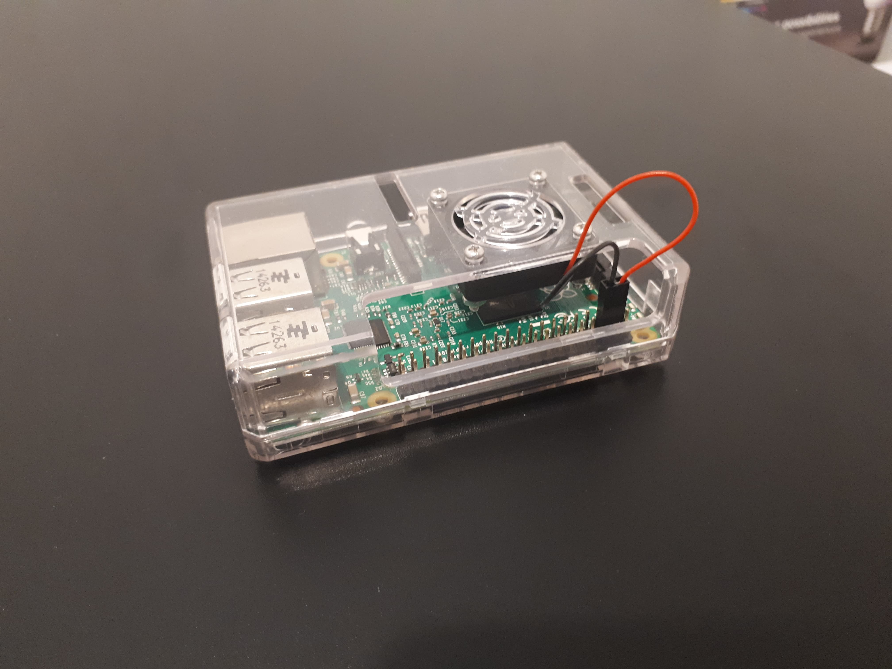
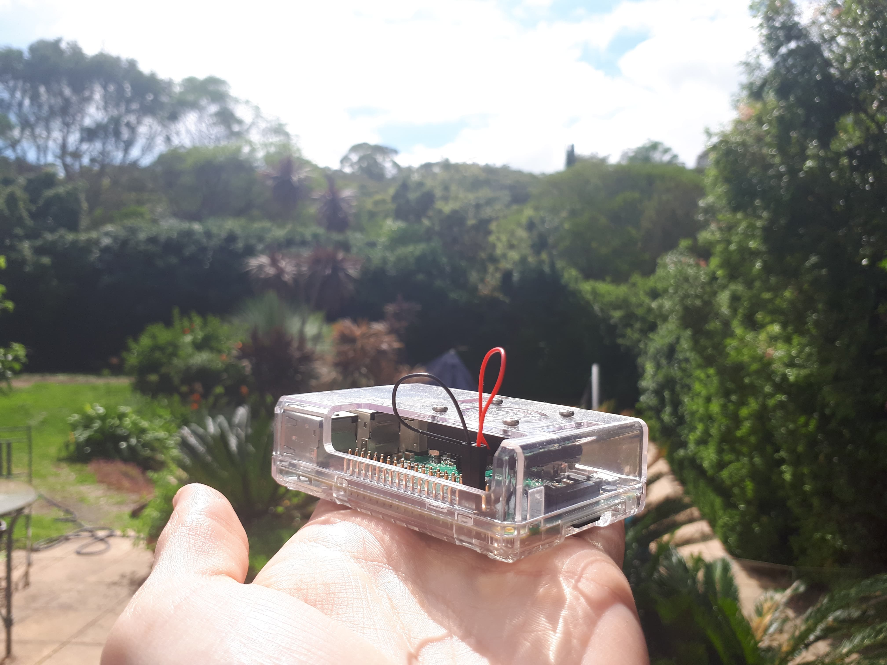
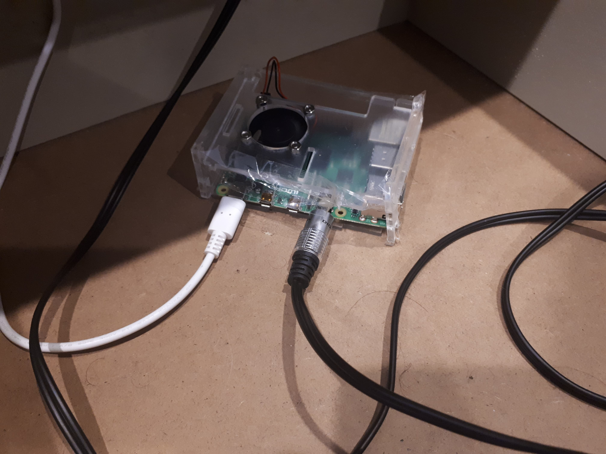

In the midst of my last exams of my second year, I decided to do some tactical procrastination. This resulted in the purchase of a Raspberry Pi, which I named Jeff. I chose to run Jeff in headless mode in order to get some extra practice on the command line. Since I was going to be using Jeff as a web server, I needed to secure him.
I was once told that security is like an onion: it comes in layers. The layers of the onion protecting Jeff were as follows: I locked the default user, added a new sudoer and my own user, set up SSH access from my computer on a new port (with an SSH config file), disabled SSH access for all new devices, disabled password authentication, set up a firewall that allowed access through my new SSH port, limited SSH attempts to 6 and installed fail2ban (to ban suspicious IP addresses).
I was aware that there were many website hosting services on the internet, but my reasoning for hosting a website on Jeff was to figure out the innerworkings of a web server and to learn as much as possible on the way. Firstly, I set up a static IP address on the Pi, installed NGINX, set up forwarding on my LAN, obtained a free domain name (samjacobs.me) with the GitHub Student Developer Pack, built a website using Flask, set up UWSGI to serve requests between NGINX and Flask and created a service on Jeff to run these requests.
The whole project was a huge learning experience for me. I had never used any of these tools before so a lot of research and head bashing was required. I consider this part of the project a success, despite the fact that I did not reach all of my goals (HTTPS encryption, hosting permanently without problems). Eventually, I decided to switch over to GitHub Pages since I could easily enable HTTPS and put some more projects on the internet. In particular, my Train Game, which I had been planning for a long time!
What is Jeff up to these days? He is now nestled comfortably in my bedside table drawer, permanently plugged into my amp and running Raspotify. This allows me to play music without plugging an aux cord into any additional devices.